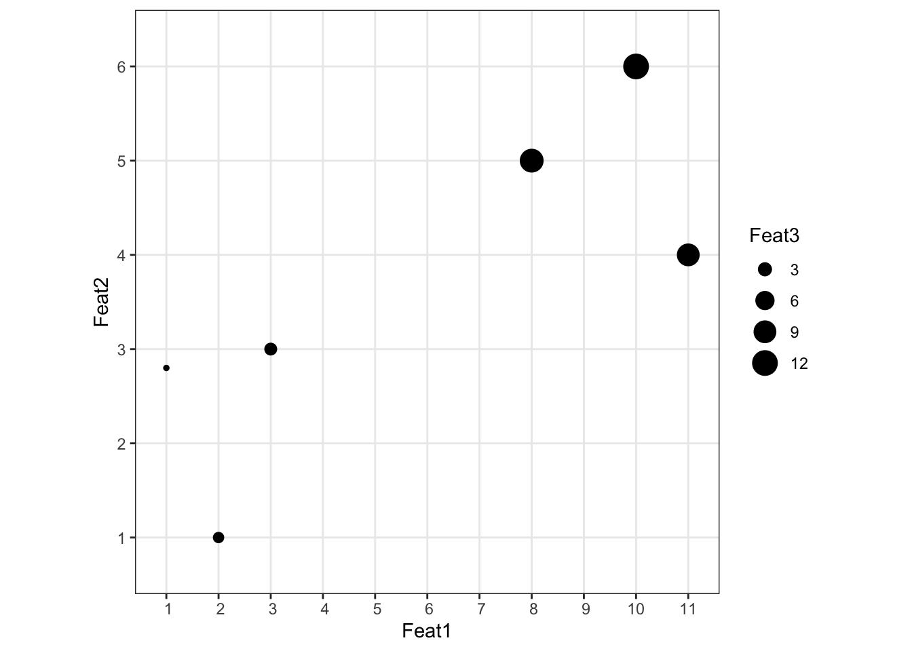
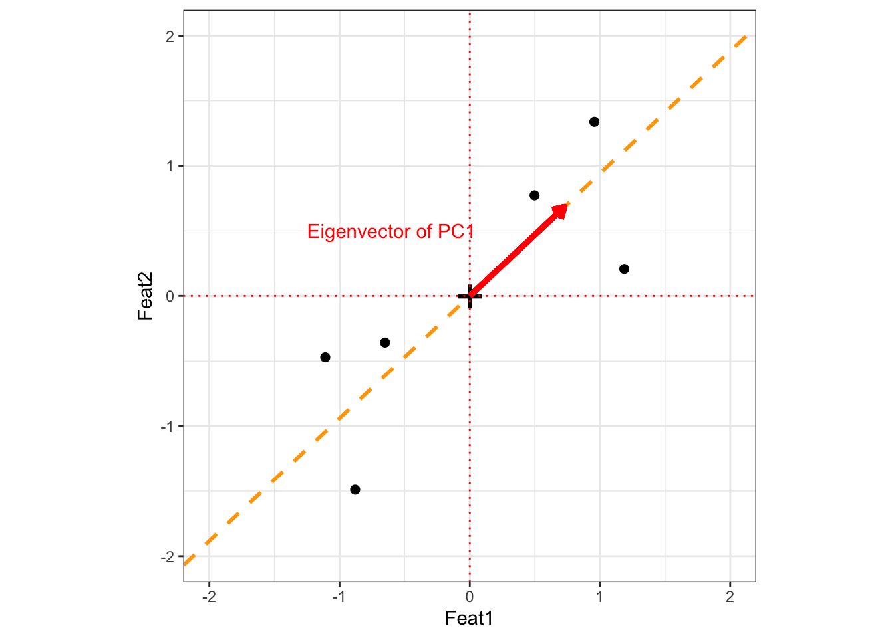
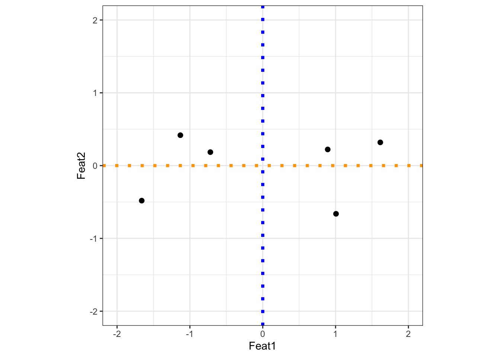

# install packages
install.packages("dplyr")
install.packages("stringr")
install.packages("writexl")
install.packages("here")
install.packages("flextable")
install.packages("tidyr")
install.packages("MASS")
install.packages("factoextra")
install.packages("ggplot2")
install.packages("report")
install.packages("psych")
install.packages("tufte")
# install klippy for copy-to-clipboard button in code chunks
install.packages("remotes")
remotes::install_github("rlesur/klippy")Introduction to Dimension Reduction Methods with R - AcqVA Aurora workshop

Introduction
This tutorial introduces dimension reduction methods with R with the aim of showcasing how these methods work, how to prepare data and how to implement selected dimension reduction methods (Principal Component Analysis, Factor Analysis, and Multidimensional Scaling). Unfortunately, we cannot deal with other, more complex dimension reduction methods such as Uniform Manifold Approximation and Projection (UMAP) or t-Distributed Stochastic Neighbor Embedding (t-SNE) in this tutorial (but we plan on adding a separate tutorial for these methods in the future). The reduction of multiple variables is useful for many things, e.g., for visualization, noise reduction, and simplifying complex data sets. However, it’s essential to note that interpretability of the principal components may not always be straightforward, as they are linear combinations of the original features.

This tutorial is aimed at beginners and intermediate users of R. The aim is not to provide a fully-fledged guide but rather to show and exemplify some common dimension reduction methods with R.
The entire R Notebook for the tutorial can be downloaded here. If you want to render the R Notebook on your machine, i.e. knitting the document to html or a pdf, you need to make sure that you have R and RStudio installed and you also need to download the bibliography file and store it in the same folder where you store the Rproj file.
Here is a link to an interactive version of this tutorial on Binder. The interactive tutorial is based on a Jupyter notebook of this tutorial. This interactive Jupyter notebook allows you to execute code yourself and - if you copy the Jupyter notebook - you can also change and edit the notebook, e.g. you can change code and upload your own data.
To be able to follow this tutorial, we suggest you check out and familiarize yourself with the content of the following R Basics tutorials:
- Introduction to Quantitative Reasoning
- Basic Concepts in Quantitative Research
- Getting started with R
- Loading, saving, and generating data in R
Click here1 to download the entire R Notebook for this tutorial.

Click here to open an interactive Jupyter notebook that allows you to execute, change, and edit the code as well as to upload your own data.
Preparation and session set up
This tutorial is based on R. If you have not installed R or are new to it, you will find an introduction to and more information how to use R here. For this tutorials, we need to install certain packages from an R library so that the scripts shown below are executed without errors. Before turning to the code below, please install the packages by running the code below this paragraph. If you have already installed the packages mentioned below, then you can skip ahead and ignore this section. To install the necessary packages, simply run the following code - it may take some time (between 1 and 5 minutes to install all of the libraries so you do not need to worry if it takes some time).
Now that we have installed the packages, we activate them as shown below.
After installing these packages, we fetch them from the library to activate the packages.
options(scipen = 999) # supress math. notation
library(dplyr)
library(here)
library(flextable)
library(stringr)
library(tidyr)
library(MASS)
library(factoextra)
library(ggplot2)
library(report)
library(psych)
library(tufte)What are dimension reduction methods?
Dimension reduction methods such as Principal Component Analysis (PCA), Multidimensional Scaling (MDS), and Factor Analysis are techniques used to reduce the number of variables or dimensions in a data set while preserving as much relevant information as possible.
The choice of method depends on the specific goals of the analysis and the nature of the data being analyzed. Each method addresses different aspects of dimension reduction:
PCA emphasizes variance
MDS emphasizes pairwise distances
Factor Analysis emphasizes the underlying latent factors.
Below are brief explanations of the three commonly used dimension reduction methods.
Principal Component Analysis (PCA)
Principal Component Analysis is a statistical technique that transforms a data set into a new coordinate system where the variables (features) are linearly uncorrelated.
It aims to find a set of orthogonal axes (principal components) in such a way that the first principal component accounts for the maximum variance in the data, the second principal component for the second maximum variance, and so on. By selecting a subset of these principal components, you can achieve dimension reduction while retaining the most significant information in the data.
Unfortunately, PCA only works really well when the number of features (or variables) isn’t too big and when the majority of the variance is explained by 2 or 3 principal components. If you are dealing with a very large data set with many features, UMAP is a better alternative.
Multidimensional Scaling (MDS)
Multidimensional Scaling is a method used to represent high-dimensional data in a lower-dimensional space (usually 2D or 3D) while maintaining pairwise distances or similarities between data points. MDS attempts to preserve the relationships among data points as much as possible. It’s often used in visualization to represent complex data in a way that makes it easier to interpret or analyze.
Like PCA, MDS only works really well when the number of variables isn’t too big and when the majority of the variance is explained by 2 or 3 dimensions.
Factor Analysis
Factor Analysis is a statistical technique that aims to uncover underlying latent factors that contribute to the observed variables in a data set. It’s particularly useful when dealing with data where variables may be correlated, and you want to identify common factors that explain the shared variance. Factor Analysis assumes that observed variables are influenced by both the common factors and unique factors specific to each variable.
Principal Component Analysis
Principal Component Analysis (PCA) (see, e.g., Clark and Ma’ayan 2011) is used for dimensionality reduction and data compression while preserving as much variance as possible in the data. It achieves this by transforming the original data into a new coordinate system defined by a set of orthogonal axes called principal components. The first principal component captures the maximum variance in the data, the second captures the second maximum variance, and so on.
“Imagine you have just opened a cider shop. You have 50 varieties of cider and you want to work out how to allocate them onto shelves, so that similar-tasting ciders are put on the same shelf. There are lots of different tastes and textures in cider - sweetness, tartness, bitterness, yeastiness, fruitiness, clarity, fizziness etc etc. So what you need to do to put the bottles into categories is answer two questions:
This is essentially what PCA does. Principal components are variables that usefully explain variation in a data set - in this case, that usefully differentiate between groups. Each principal component is one of your original explanatory variables, or a combination of some of your original explanatory variables.”
What qualities are most important for identifying groups of ciders? e.g. does classifying based on sweetness make it easier to cluster your ciders into similar-tasting groups than classifying based on fruitiness?
Can we reduce our list of variables by combining some of them? e.g. is there actually a variable that is some combination of “yeastiness and clarity and fizziness” and which makes a really good scale for classifying varieties?
Let’s delve into an easy example to get a better understanding of the theoretical underpinnings of PCA and to see how it works (this section is based on Starmer 2018) and a very brief, nice, and easy to understand explanation of PCA is available here (Amoeba 2022)…
Primer: Why should I use a PCA and what does PCA tell us?
Imagine we have a data set representing measurements of 4 features across a sample of 6 languages. We now want to see if the languages from groups based on the frequencies of these features.
Language | Feat1 | Feat2 | Feat3 | Feat4 |
|---|---|---|---|---|
Lang1 | 10 | 6.0 | 12.0 | 5 |
Lang2 | 11 | 4.0 | 9.0 | 7 |
Lang3 | 8 | 5.0 | 10.0 | 6 |
Lang4 | 3 | 3.0 | 2.5 | 2 |
Lang5 | 1 | 2.8 | 1.3 | 4 |
Lang6 | 2 | 1.0 | 2.0 | 7 |
To understand how PCA works, let us start by plotting the first feature (Feat1).

When we check the visualization of the first feature, we see that there appear to be two groups in our data!
We now add the second feature (Feat2) to check if the second feature adds information and supports our hypothesis that there are two types of languages in our data based on the features we collected.
While adding the second feature has not added much information (in that sense, Feat2 not as distinctive), there still appear to be two groups. However, we continue by adding the third feature (Feat3) by adding size as a way to show the third feature.
Feat3 supports the two group hypothesis as small dots have values below 5 and big dots have values above 5 on the first feature scale. Finally, we add the fourth feature (Feat4) and use color to visualize this 4th dimension.

Like the second feature, Feat4 has not added much information.
Now, what would we use a PCA for in this context?
PCA can tell us if and how many groups there are in our data and it can tell use what features are responsible for the division into groups!
Let’s now go through a PCA step-by-step. Also, we only consider Feat1 and Feat2 to keep things very simple.
Language | Feat1 | Feat2 |
|---|---|---|
Lang1 | 10 | 6.0 |
Lang2 | 11 | 4.0 |
Lang3 | 8 | 5.0 |
Lang4 | 3 | 3.0 |
Lang5 | 1 | 2.8 |
Lang6 | 2 | 1.0 |
We start by calculating the center of the data.

Next we scale and center the data so that the center is at (0,0).
The relationship between data points is unchanged!
Important: always center and scale your data as the scales will impact the magnitude of variance! In other words, if you do not center and scale, components can be deemed important simply because the scale of the variables is bigger (not because they are more important)!
Now, we fit a line through the data.

IMPORTANT!
But how do we arrive at this line and what is there always talk about “orthogonal” when talking about PCA?
Let’s have a look at simple the Ordinary Least Squared (OLS) procedure that underlies regression:
In OLS, the lines that represent variance (or residuals) are perpendicular to the x-axis.
However, in PCA, the line are perpendicular to the regression line as shown below!
The line that minimizes variance is called Principal Component 1 (PC1) and it is different from a regression line. The PC1 can be found by minimizing the orthogonal distances (blue lines above) between data points and their projections (green points above)!.
An alternative way to find PC1 is actually not to try and minimize the distance between the data point and its projection but to maximize the distance between the projection (the green points on the line) and the origin (the center of the coordinate system). We can then square the distances between projections and the origin and add these squared distances, which gives us the sum of squared distances or SS(distances).
PC1 has a slope of 0.9411239 - this already shows us that the data is spread much more along PC1 that along PC2!
We go about 1.0625593 units (1 / 0.9411) to the right and 1 unit up.
Now, we find the value for a (square root of b2 + c2) = 1.4591204.
Next, we scale b and c so that a is 1.
a2 = b2 + c2
b = 1.0625593 / 1.4591204 = 0.7282191
c = 1 / 1.4591204 = 0.6853444
To make PC1, we need 0.738 of Feat1 and 0.685 of Feat2.
This 1 unit long vector (a) is called the Eigenvector for PC1.
Eigenvector and Eigenvalue are not the same! Eigenvector represent the factor loadings for each observed variable on a specific factor. Eigenvalue represents the amount of variance explained by an entire factor.
The proportions (0.738 and 0.685) are called the loading scores.
PC2 is simply the perpendicular line to PC1 that goes through 0,0.

As PC1 and PC2 are perpendicular, the Eigenvector of PC2 is -0.685 of Feat1 and 0.728 of Feat2.
We can (but have to) rotate the PC1 and make the points smaller (so that our plot looks more like a proper PCA plot).

To plot the results of a PCA, we simply rotate the plot so that the PCs reflect the axes and we project the points onto the PCs.
# generate data
df <- data.frame(
pcadat$Feat1,
pcadat$Feat2
)
colnames(df) <- c("Feat1", "Feat2")
# perform PCA
pcaex <- prcomp(df, center = T, scale = T)
# visualize PCA results
fviz_pca_ind(pcaex, label = "") +
coord_cartesian(xlim = c(-2, 2), ylim = c(-2, 2)) +
ggtitle("PCA plot") +
theme(aspect.ratio = 1)Now we have an understanding of how we arrive at the visual representation of a PCA. But how do we arrive at the explained variance?
In the context of PCA, variance refers to summative variance or overall/total variability.
To get a better grasp of what this means, let’s consider a covariance matrix of some 3 variables (rather than just 2 variables as above). Their variances are on the diagonal, and the sum of the 3 values (3.248) is the overall variability.
V1 | V2 | V3 |
|---|---|---|
1.3437305 | -0.1601523 | 0.1864702 |
-0.1601523 | 0.6192056 | -0.1266843 |
0.1864702 | -0.1266843 | 1.4855496 |
Now, PCA replaces original variables with new variables, called principal components, which are orthogonal (i.e. they have zero covariation!) and have variances (called eigenvalues) in decreasing order. So, the covariance matrix between the principal components extracted from the above data is this:
V1 | V2 | V3 |
|---|---|---|
1.651354 | 0.000000 | 0.0000000 |
0.000000 | 1.220288 | 0.0000000 |
0.000000 | 0.000000 | 0.5768431 |
Note that the diagonal sum is still 3.448, which says that all 3 components account for all the multivariate variability. The PC1 accounts for or “explains” 1.651/3.448 = 47.9% of the overall variability; the PC2 explains 1.220/3.448 = 35.4% of it; the 3rd one explains .577/3.448 = 16.7% of it.
So, what do they mean when they say that PCA explains maximal variance? That is not, of course, that it finds the largest variance among three values 1.343730519 .619205620 1.485549631. PCA finds, in the data space, the dimension (direction) with the largest variance out of the overall variance 1.343730519+.619205620+1.485549631 = 3.448. That largest variance would be 1.651354285. Then it finds the dimension of the second largest variance, orthogonal to the first one, out of the remaining 3.448-1.651354285 overall variance. That 2nd dimension would be 1.220288343 variance. And so on. The last remaining dimension is .576843142 variance.
For our example, we can extract the amount of variance accounted for as shown below:
Step 1: get loading scores
pcaex$x PC1 PC2
[1,] -1.6229306 0.2698980
[2,] -0.9855078 -0.6922526
[3,] -0.8983094 0.1947325
[4,] 0.7132969 0.2067653
[5,] 1.1180034 0.4515144
[6,] 1.6754475 -0.4306576
Step 2: calculate standard deviations of PC1 and PC2
sdpc1 <- sd(pcaex$x[, 1])
sdpc2 <- sd(pcaex$x[, 2])
sdpc1[1] 1.339995sdpc2[1] 0.45212Step 3: use standard deviations to calculate the amount of variance explained by each component
# Proportion of Variance PC1 = sd PC1 squared / (sd PC1 squared + sd PC2 squared)
sdpc1^2 / (sdpc1^2 + sdpc2^2)[1] 0.8977938# Proportion of Variance PC2 = sd PC2 squared / (sd PC1 squared + sd PC2 squared)
sdpc2^2 / (sdpc1^2 + sdpc2^2)[1] 0.1022062According to our manual calculation, PC1 explains 0.8978 % of the variation while PC2 explains 0.1022 % of the variation. To check if this is correct, we check our results against the results provided by the prcomp function.
Importance of components:
PC1 PC2
Standard deviation 1.3400 0.4521
Proportion of Variance 0.8978 0.1022
Cumulative Proportion 0.8978 1.0000But how do we arrive at the standard deviations of the PCs? The standard deviations of the PCs are the covariance matrix values for the respective PCs! So let’s have a look at the covariance matrices of the raw data, the scales data, and the rotated, final data.
Feat1 Feat2
Feat1 18.966667 6.126667
Feat2 6.126667 3.126667 Feat1 Feat2
Feat1 1.0000000 0.7955875
Feat2 0.7955875 1.0000000 PC1 PC2
PC1 1.7955875066756541436064 -0.0000000000000004884981
PC2 -0.0000000000000004884981 0.2044124933243467445720We see that the standard deviation of PC1 is equal to the sum of the first row (or column) of the scaled covariance matrix. But more importantly, we see that the squared standard deviations of the PCs are equal to the variances (eigenvalues) of the PCs in the covariance matrix.
sdpc1^2 # sd of PC1 squared[1] 1.795588# which is equal to
sum(cov(pcaex$x)[1, ])[1] 1.795588sdpc2^2 # sd of PC2 squared[1] 0.2044125# which is equal to
sum(cov(pcaex$x)[2, ])[1] 0.2044125Now that we have worked through one example of a PCA manually, we turn to several examples to show how one can implement PCA in R to showcase what PCA can be used for.
Example 1
Here, we will show
how to use the
prcomp()function to perform PCAhow to draw a PCA plot using ggplot2
how to determine how much variation each component accounts for
how to examine the loading scores to determine what variables have the largest effect on the graph
In this example, the data is in a matrix called pcadat where columns are individual samples (i.e. languages) and rows are measurements taken for all the samples (i.e. features).
pcadat <- matrix(nrow = 100, ncol = 10)
colnames(pcadat) <- c(
paste("indoeu", 1:5, sep = ""), # Indo-European languages
paste("austro", 1:5, sep = "")
) # Austronesian languages
rownames(pcadat) <- paste("feature", 1:100, sep = "")
for (i in 1:100) {
indoeu.values <- rpois(5, lambda = sample(x = 10:1000, size = 1))
austro.values <- rpois(5, lambda = sample(x = 10:1000, size = 1))
pcadat[i, ] <- c(indoeu.values, austro.values)
}
# inspect data
head(pcadat) indoeu1 indoeu2 indoeu3 indoeu4 indoeu5 austro1 austro2 austro3
feature1 777 753 798 751 788 656 730 689
feature2 992 994 1026 974 1059 632 675 682
feature3 42 39 44 45 45 92 90 79
feature4 803 805 744 765 792 353 325 352
feature5 612 612 667 619 661 753 788 780
feature6 281 284 280 331 301 699 726 677
austro4 austro5
feature1 649 734
feature2 634 670
feature3 102 81
feature4 333 306
feature5 742 745
feature6 665 682dim(pcadat)[1] 100 10We now implement the PCA using the prcomp function from the stats package. In our case, we specify that we want to transpose the data (using the t function) because we need features to represent columns (not rows!) and we set the argument scale to TRUE as the data has to be normalised for a PCA to provide reliable results.
pca <- prcomp(t(pcadat), scale = TRUE)Now, we generate a scree plot to show how much variance is accounted for by each component. We start by preparing the data.
# prepare data
pca.var <- pca$sdev^2
# extract percentage of contribution
pca.var.per <- round(pca.var / sum(pca.var) * 100, 1)
# generate data frame for visualization
pcascreedat <- data.frame(
Component = paste0("PC", 1:10),
Percent = round(pca.var / sum(pca.var) * 100, 2)
) %>%
dplyr::mutate(
Text = paste0(Percent, "%"),
Component = factor(Component,
levels = c("PC1", "PC2", "PC3", "PC4", "PC5", "PC6", "PC7", "PC8", "PC9", "PC10")
)
)
# inspect
pcascreedat Component Percent Text
1 PC1 91.83 91.83%
2 PC2 2.84 2.84%
3 PC3 1.26 1.26%
4 PC4 1.08 1.08%
5 PC5 0.94 0.94%
6 PC6 0.61 0.61%
7 PC7 0.56 0.56%
8 PC8 0.55 0.55%
9 PC9 0.33 0.33%
10 PC10 0.00 0%Now that the dtaa is formatted appropriately, we generate the scree plot.
ggplot(pcascreedat, aes(x = Component, y = Percent, label = Text)) +
geom_bar(stat = "identity") +
geom_text(vjust = -1.6, size = 3) +
ggtitle("Scree Plot") +
labs(x = "Principal Components", y = "Percent Variation") +
theme_bw() +
coord_cartesian(ylim = c(0, 100))
The scree plots shows that the PC1 accounts for 87.69% of the variability while the PC2 only accounts for 3.52% of the variability. This means that one component suffices to differentiate the data.
Now we make a fancy looking plot that shows the PCs and the variation.
data.frame(
Sample = rownames(pca$x),
X = pca$x[, 1],
Y = pca$x[, 2]
) %>%
ggplot(aes(x = X, y = Y, label = Sample)) +
geom_text() +
xlab(paste("PC1 (", pca.var.per[1], "%)", sep = "")) +
ylab(paste("PC2 (", pca.var.per[2], "%)", sep = "")) +
theme_bw() +
ggtitle("PCA Graph") +
coord_cartesian(xlim = c(-11, 11))Next, we get the names of the most important 5 features that contribute most to PC1.
loading_scores <- pca$rotation[, 1]
# extract the magnitudes of the scores
feature_scores <- abs(loading_scores)
# extract the 5 highest scores
feature_score_ranked <- sort(feature_scores, decreasing = TRUE)
top_5_features <- names(feature_score_ranked[1:5])
# show the names of the top 5 features
top_5_features[1] "feature38" "feature15" "feature43" "feature47" "feature53"Now, we show the scores (and +/- sign)
pca$rotation[top_5_features, 1] feature38 feature15 feature43 feature47 feature53
-0.1042985 0.1042909 -0.1042813 -0.1042760 0.1042701 Example 2
In this example, we explore the use of PCA for survey data. Specifically, we want to use PCA to check if 5 items reflect the underlying factor appropriately or if one of the items needs to be replaced.
surveydata <- base::readRDS(url("https://slcladal.github.io/data/sud.rda", "rb"))
# inspect
flextable::flextable(head(surveydata, 10))Respondent | Q01_Outgoing | Q02_Outgoing | Q03_Outgoing | Q04_Outgoing | Q05_Outgoing | Q06_Intelligence | Q07_Intelligence | Q08_Intelligence | Q09_Intelligence | Q10_Intelligence | Q11_Attitude | Q12_Attitude | Q13_Attitude | Q14_Attitude | Q15_Attitude |
|---|---|---|---|---|---|---|---|---|---|---|---|---|---|---|---|
Respondent_01 | 4 | 5 | 4 | 4 | 5 | 2 | 3 | 3 | 2 | 2 | 3 | 3 | 2 | 3 | 3 |
Respondent_02 | 5 | 4 | 5 | 4 | 4 | 2 | 2 | 2 | 1 | 2 | 4 | 4 | 4 | 5 | 4 |
Respondent_03 | 5 | 4 | 4 | 5 | 5 | 2 | 1 | 1 | 2 | 2 | 5 | 4 | 4 | 4 | 4 |
Respondent_04 | 5 | 5 | 5 | 4 | 5 | 1 | 1 | 1 | 1 | 1 | 5 | 4 | 5 | 5 | 5 |
Respondent_05 | 4 | 5 | 4 | 5 | 5 | 2 | 2 | 1 | 2 | 1 | 4 | 5 | 4 | 5 | 5 |
Respondent_06 | 5 | 5 | 5 | 5 | 4 | 5 | 4 | 5 | 2 | 2 | 1 | 2 | 1 | 2 | 1 |
Respondent_07 | 4 | 5 | 4 | 5 | 5 | 4 | 5 | 4 | 4 | 5 | 2 | 1 | 1 | 2 | 1 |
Respondent_08 | 4 | 4 | 5 | 4 | 5 | 5 | 4 | 5 | 4 | 5 | 1 | 2 | 1 | 1 | 2 |
Respondent_09 | 5 | 5 | 4 | 4 | 4 | 5 | 5 | 4 | 4 | 5 | 1 | 2 | 2 | 1 | 2 |
Respondent_10 | 4 | 5 | 5 | 4 | 4 | 4 | 4 | 5 | 4 | 5 | 2 | 1 | 2 | 2 | 1 |
We now implement the PCA.
# entering raw data and extracting PCs from the correlation matrix
pca_res2 <- princomp(surveydata[c(
"Q01_Outgoing",
"Q02_Outgoing",
"Q03_Outgoing",
"Q04_Outgoing",
"Q05_Outgoing"
)])
# print variance accounted for
summary(pca_res2)Importance of components:
Comp.1 Comp.2 Comp.3 Comp.4 Comp.5
Standard deviation 3.2317383 0.62656643 0.50633614 0.44585671 0.332592305
Proportion of Variance 0.9159511 0.03442977 0.02248422 0.01743374 0.009701174
Cumulative Proportion 0.9159511 0.95038087 0.97286509 0.99029883 1.000000000The cumulative proportion of variance already shows that the five items represent a single underlying factor as 91.5% of the variance is explained by PC1 alone!
The loading scores for PC1 are very similar for all items and thus show that none of the items under performs. In such a case, it might make sense to remove items, not because they do not capture the underlying concept but to reduce the items for participants.
# prepare data
pca2.var <- pca_res2$sdev^2
# extract percentage of contribution
pca2.var.per <- round(pca.var / sum(pca.var) * 100, 1)
# generate data frame for visualization
data.frame(
Component = paste0("PC", 1:5),
Percent = round(pca2.var / sum(pca2.var) * 100, 2)
) %>%
dplyr::mutate(
Text = paste0(Percent, "%"),
Component = factor(Component,
levels = c("PC1", "PC2", "PC3", "PC4", "PC5")
)
) %>%
ggplot(aes(x = Component, y = Percent, label = Text)) +
geom_bar(stat = "identity") +
geom_text(vjust = -1.6, size = 3) +
ggtitle("Scree Plot") +
labs(x = "Principal Components", y = "Percent Variation") +
theme_bw() +
coord_cartesian(ylim = c(0, 100))
We now plot the loading scores for each participant to see if we can see groups among the participants based on outgoingness.
pca_res2$scores %>%
as.data.frame() %>%
dplyr::rename(
PC1 = 1,
PC2 = 2,
PC3 = 3,
PC4 = 4,
PC5 = 5
) %>%
dplyr::mutate(
Participants = paste0("P", 1:20),
clr = ifelse(PC1 > 0, 1, 0)
) %>%
ggplot(aes(x = PC1, y = PC2, color = clr, label = Participants)) +
geom_point(size = 2) +
geom_text(size = 3, nudge_x = -.2, check_overlap = T) +
theme_bw() +
scale_color_viridis_b() +
theme(legend.position = "none")The figure shows that based on PC1, we can distinguish between subjects who are very outgoign and subjects that are not very outgoing.
Example 3
In this example, we use the biopsy data to see what variables can be used to predict malignant melanomas.
In a first step, we remove any data points with missing values and add meaningful variable names.
data(biopsy)
biopsy_nona <- biopsy %>%
tidyr::drop_na() %>%
# add meaningful variable names
dplyr::rename(
ClumpSize = V1,
CellSize = V2,
CellShape = V3,
Adhesion = V4,
EpithelialSize = V5,
Nuclei = V6,
Chromatin = V7,
Nucleoli = V8,
Mitoses = V9
)
# inspect data
flextable::flextable(head(biopsy_nona, 10))ID | ClumpSize | CellSize | CellShape | Adhesion | EpithelialSize | Nuclei | Chromatin | Nucleoli | Mitoses | class |
|---|---|---|---|---|---|---|---|---|---|---|
1000025 | 5 | 1 | 1 | 1 | 2 | 1 | 3 | 1 | 1 | benign |
1002945 | 5 | 4 | 4 | 5 | 7 | 10 | 3 | 2 | 1 | benign |
1015425 | 3 | 1 | 1 | 1 | 2 | 2 | 3 | 1 | 1 | benign |
1016277 | 6 | 8 | 8 | 1 | 3 | 4 | 3 | 7 | 1 | benign |
1017023 | 4 | 1 | 1 | 3 | 2 | 1 | 3 | 1 | 1 | benign |
1017122 | 8 | 10 | 10 | 8 | 7 | 10 | 9 | 7 | 1 | malignant |
1018099 | 1 | 1 | 1 | 1 | 2 | 10 | 3 | 1 | 1 | benign |
1018561 | 2 | 1 | 2 | 1 | 2 | 1 | 3 | 1 | 1 | benign |
1033078 | 2 | 1 | 1 | 1 | 2 | 1 | 1 | 1 | 5 | benign |
1033078 | 4 | 2 | 1 | 1 | 2 | 1 | 2 | 1 | 1 | benign |
Next, we remove non-numeric variables.
biopsy_num <- biopsy_nona %>%
dplyr::select_if(is.numeric)
# inspect data
flextable::flextable(head(biopsy_num, 10))ClumpSize | CellSize | CellShape | Adhesion | EpithelialSize | Nuclei | Chromatin | Nucleoli | Mitoses |
|---|---|---|---|---|---|---|---|---|
5 | 1 | 1 | 1 | 2 | 1 | 3 | 1 | 1 |
5 | 4 | 4 | 5 | 7 | 10 | 3 | 2 | 1 |
3 | 1 | 1 | 1 | 2 | 2 | 3 | 1 | 1 |
6 | 8 | 8 | 1 | 3 | 4 | 3 | 7 | 1 |
4 | 1 | 1 | 3 | 2 | 1 | 3 | 1 | 1 |
8 | 10 | 10 | 8 | 7 | 10 | 9 | 7 | 1 |
1 | 1 | 1 | 1 | 2 | 10 | 3 | 1 | 1 |
2 | 1 | 2 | 1 | 2 | 1 | 3 | 1 | 1 |
2 | 1 | 1 | 1 | 2 | 1 | 1 | 1 | 5 |
4 | 2 | 1 | 1 | 2 | 1 | 2 | 1 | 1 |
We can perform the PCA.
biopsy_pca <- prcomp(biopsy_num,
scale = T
)
# summary
summary(biopsy_pca)Importance of components:
PC1 PC2 PC3 PC4 PC5 PC6 PC7
Standard deviation 2.4289 0.88088 0.73434 0.67796 0.61667 0.54943 0.54259
Proportion of Variance 0.6555 0.08622 0.05992 0.05107 0.04225 0.03354 0.03271
Cumulative Proportion 0.6555 0.74172 0.80163 0.85270 0.89496 0.92850 0.96121
PC8 PC9
Standard deviation 0.51062 0.29729
Proportion of Variance 0.02897 0.00982
Cumulative Proportion 0.99018 1.00000First, we create a scree plot of the variance captured by each component.
factoextra::fviz_eig(biopsy_pca,
addlabels = T,
ylim = c(0, 80),
barfill = "gray50",
barcolor = "gray20"
)
We now create a pretty biplot to show the results of the PCA.
fviz_pca_biplot(biopsy_pca,
geom = "point",
# no data point labels
label = "var",
# color by class
habillage = biopsy_nona$class,
# change variable color
col.var = "black"
) +
# adapt data point color
ggplot2::scale_color_manual(values = c("orange", "purple")) +
# add title
ggtitle("A pretty biplot")The plot above is also known as variable correlation plot or biplot. A biplot overlays a score plot with a loading plot and thus shows individual data points as well as the relationships between all variables (in the form of arrows). It can be interpreted as follow:
- Positively correlated variables are grouped together.
- Negatively correlated variables would be positioned on opposite sides of the plot origin (opposed quadrants).
- The distance between variables and the origin measures the quality of the variables on the factor map.
- Variables that are away from the origin are well represented on the factor map.
But why are all variables cluster together?
Let’s have a look at the correlations between variables.
ClumpSize | CellSize | CellShape | Adhesion | EpithelialSize | Nuclei | Chromatin | Nucleoli | Mitoses |
|---|---|---|---|---|---|---|---|---|
1.0000000 | 0.6424815 | 0.6534700 | 0.4878287 | 0.5235960 | 0.5930914 | 0.5537424 | 0.5340659 | 0.3509572 |
0.6424815 | 1.0000000 | 0.9072282 | 0.7069770 | 0.7535440 | 0.6917088 | 0.7555592 | 0.7193460 | 0.4607547 |
0.6534700 | 0.9072282 | 1.0000000 | 0.6859481 | 0.7224624 | 0.7138775 | 0.7353435 | 0.7179634 | 0.4412576 |
0.4878287 | 0.7069770 | 0.6859481 | 1.0000000 | 0.5945478 | 0.6706483 | 0.6685671 | 0.6031211 | 0.4188983 |
0.5235960 | 0.7535440 | 0.7224624 | 0.5945478 | 1.0000000 | 0.5857161 | 0.6181279 | 0.6289264 | 0.4805833 |
0.5930914 | 0.6917088 | 0.7138775 | 0.6706483 | 0.5857161 | 1.0000000 | 0.6806149 | 0.5842802 | 0.3392104 |
0.5537424 | 0.7555592 | 0.7353435 | 0.6685671 | 0.6181279 | 0.6806149 | 1.0000000 | 0.6656015 | 0.3460109 |
0.5340659 | 0.7193460 | 0.7179634 | 0.6031211 | 0.6289264 | 0.5842802 | 0.6656015 | 1.0000000 | 0.4337573 |
0.3509572 | 0.4607547 | 0.4412576 | 0.4188983 | 0.4805833 | 0.3392104 | 0.3460109 | 0.4337573 | 1.0000000 |
The correlation matrix shows that all variables are positively correlated which explains why all variables cluster together. The low correlations between the other variables and Mitosis explain why it stands out.
Multidimensional Scaling
Multidimensional Scaling (MDS, see Davison (1983) or Jacoby and Ciuk (2018)) is used for visualizing high-dimensional data in a lower-dimensional space while preserving pairwise distances or similarities between data points. MDS aims to represent the data in a way that maintains the relationships among data points as much as possible.
There are two types of MDS:
metric or classical MDS: metric MDS aims to represent the distances between objects in a way that preserves the original dissimilarity/similarity relationships as accurately as possible. It assumes that the input data reflects actual distances or dissimilarities and it uses algorithms such as Principal Coordinate Analysis (PCoA) to transform the data into a lower-dimensional space while trying to maintain the original pairwise distances.
non-metric MDS: non-metric MDS aims to represent the rank order of the distances or dissimilarities between objects, rather than the actual distances. It is more suitable when the input data does not have a direct metric interpretation or when the distances are only known in terms of ordinal rankings.
MDS works exactly like PCA with one important difference: while PCA starts off with correlations between variables (the covariance matrix), MDS start of with distances (and thus relies on a distance matrix)!
Example 1
We begin by loading data. This fictitious data set represents responses to 15 items by 20 participants. The 15 items aim to assess 3 different psychological constructs:
outgoingness (extroversion)
intelligence
attitude
surveydata <- base::readRDS(url("https://slcladal.github.io/data/sud.rda", "rb"))
# inspect
report(surveydata)The data contains 20 observations of the following 16 variables:
- Respondent: 20 entries, such as Respondent_01 (n = 1); Respondent_02 (n = 1);
Respondent_03 (n = 1) and 17 others (0 missing)
- Q01_Outgoing: n = 20, Mean = 3.15, SD = 1.53, Median = 3.50, MAD = 2.22,
range: [1, 5], Skewness = -0.18, Kurtosis = -1.52, 0 missing
- Q02_Outgoing: n = 20, Mean = 3.25, SD = 1.59, Median = 3.50, MAD = 2.22,
range: [1, 5], Skewness = -0.10, Kurtosis = -1.73, 0 missing
- Q03_Outgoing: n = 20, Mean = 3.15, SD = 1.50, Median = 3.50, MAD = 2.22,
range: [1, 5], Skewness = -0.07, Kurtosis = -1.58, 0 missing
- Q04_Outgoing: n = 20, Mean = 3.00, SD = 1.56, Median = 3.50, MAD = 2.22,
range: [1, 5], Skewness = -0.09, Kurtosis = -1.64, 0 missing
- Q05_Outgoing: n = 20, Mean = 3.20, SD = 1.58, Median = 3.50, MAD = 2.22,
range: [1, 5], Skewness = -0.19, Kurtosis = -1.59, 0 missing
- Q06_Intelligence: n = 20, Mean = 2.90, SD = 1.45, Median = 2.00, MAD = 1.48,
range: [1, 5], Skewness = 0.31, Kurtosis = -1.43, 0 missing
- Q07_Intelligence: n = 20, Mean = 3.05, SD = 1.39, Median = 3.00, MAD = 1.48,
range: [1, 5], Skewness = 0.03, Kurtosis = -1.24, 0 missing
- Q08_Intelligence: n = 20, Mean = 2.95, SD = 1.54, Median = 2.50, MAD = 2.22,
range: [1, 5], Skewness = 0.19, Kurtosis = -1.54, 0 missing
- Q09_Intelligence: n = 20, Mean = 2.80, SD = 1.51, Median = 2.00, MAD = 1.48,
range: [1, 5], Skewness = 0.38, Kurtosis = -1.48, 0 missing
- Q10_Intelligence: n = 20, Mean = 3.60, SD = 1.50, Median = 4.00, MAD = 1.48,
range: [1, 5], Skewness = -0.58, Kurtosis = -1.33, 0 missing
- Q11_Attitude: n = 20, Mean = 2.75, SD = 1.62, Median = 2.50, MAD = 2.22,
range: [1, 5], Skewness = 0.20, Kurtosis = -1.65, 0 missing
- Q12_Attitude: n = 20, Mean = 2.95, SD = 1.43, Median = 2.50, MAD = 2.22,
range: [1, 5], Skewness = 0.22, Kurtosis = -1.40, 0 missing
- Q13_Attitude: n = 20, Mean = 2.75, SD = 1.65, Median = 2.00, MAD = 1.48,
range: [1, 5], Skewness = 0.21, Kurtosis = -1.77, 0 missing
- Q14_Attitude: n = 20, Mean = 2.95, SD = 1.54, Median = 2.50, MAD = 2.22,
range: [1, 5], Skewness = 0.19, Kurtosis = -1.54, 0 missing
- Q15_Attitude: n = 20, Mean = 2.95, SD = 1.70, Median = 2.50, MAD = 2.22,
range: [1, 5], Skewness = 0.09, Kurtosis = -1.82, 0 missingAs MDS, like PCA and FA, works only on numeric data, we remove non-numeric variables from the data.
surveydata <- surveydata %>%
dplyr::select(-Respondent)
# inspect
str(surveydata)'data.frame': 20 obs. of 15 variables:
$ Q01_Outgoing : int 4 5 5 5 4 5 4 4 5 4 ...
$ Q02_Outgoing : int 5 4 4 5 5 5 5 4 5 5 ...
$ Q03_Outgoing : int 4 5 4 5 4 5 4 5 4 5 ...
$ Q04_Outgoing : int 4 4 5 4 5 5 5 4 4 4 ...
$ Q05_Outgoing : int 5 4 5 5 5 4 5 5 4 4 ...
$ Q06_Intelligence: int 2 2 2 1 2 5 4 5 5 4 ...
$ Q07_Intelligence: int 3 2 1 1 2 4 5 4 5 4 ...
$ Q08_Intelligence: int 3 2 1 1 1 5 4 5 4 5 ...
$ Q09_Intelligence: int 2 1 2 1 2 2 4 4 4 4 ...
$ Q10_Intelligence: int 2 2 2 1 1 2 5 5 5 5 ...
$ Q11_Attitude : int 3 4 5 5 4 1 2 1 1 2 ...
$ Q12_Attitude : int 3 4 4 4 5 2 1 2 2 1 ...
$ Q13_Attitude : int 2 4 4 5 4 1 1 1 2 2 ...
$ Q14_Attitude : int 3 5 4 5 5 2 2 1 1 2 ...
$ Q15_Attitude : int 3 4 4 5 5 1 1 2 2 1 ...For MDS, we first calculate the distance matrix using the Euclidian distance. Note that we are transposing, scaling and centering the data just like for PCA.
survey_dist <- dist(scale(t(surveydata), center = TRUE, scale = TRUE),
method = "euclidean"
)Now, we generate an MDS object (this is basically eigenvalue decomposition)
mds.obj <- cmdscale(survey_dist,
eig = TRUE, # adds a matrix of eignevalues to the mds object
x.ret = TRUE
) # adds a symmetric distance matrix to the mds objectNow, we calculate the percentage of variation that each MDS axis accounts for…
mds.var.per <- round(mds.obj$eig / sum(mds.obj$eig) * 100, 1)
# inspect
mds.var.per [1] 54.8 29.0 4.8 2.7 2.1 1.7 1.5 1.0 0.9 0.6 0.4 0.3 0.1 0.0 0.0We make a fancy looking plot that shows the MDS axes and the variation:
mds.values <- mds.obj$points
mds.data <- data.frame(
Sample = rownames(mds.values),
X = mds.values[, 1],
Y = mds.values[, 2]
)
# inspect
mds.data Sample X Y
Q01_Outgoing Q01_Outgoing 1.2441258 -2.9521948
Q02_Outgoing Q02_Outgoing 1.3832771 -3.2215742
Q03_Outgoing Q03_Outgoing 0.8464687 -2.8364303
Q04_Outgoing Q04_Outgoing 0.6884322 -3.1352690
Q05_Outgoing Q05_Outgoing 0.3742058 -3.2123840
Q06_Intelligence Q06_Intelligence 3.7001253 1.1236968
Q07_Intelligence Q07_Intelligence 3.4292730 1.8623706
Q08_Intelligence Q08_Intelligence 4.0132660 1.5106590
Q09_Intelligence Q09_Intelligence 3.8680562 2.5632774
Q10_Intelligence Q10_Intelligence 1.5665476 3.9359300
Q11_Attitude Q11_Attitude -4.4171807 0.6011738
Q12_Attitude Q12_Attitude -3.8486419 1.2134235
Q13_Attitude Q13_Attitude -4.6650593 1.4927673
Q14_Attitude Q14_Attitude -3.8067797 0.1881540
Q15_Attitude Q15_Attitude -4.3761161 0.8663999ggplot(data = mds.data, aes(x = X, y = Y, label = Sample)) +
geom_text() +
theme_bw() +
xlab(paste("MDS1 - ", mds.var.per[1], "%", sep = "")) +
ylab(paste("MDS2 - ", mds.var.per[2], "%", sep = "")) +
ggtitle("MDS plot using Euclidean distance") +
coord_cartesian(xlim = c(-7, 7), ylim = c(-4, 4))
The plot shows that we are dealing with 3 groups that are neatly separated along 2 dimensions. We also see that Q10 behaves different from the other items aiming to assess IQ. We could use this to optimize the item set of our survey.
Factor Analysis
Factor Analysis is used to identify underlying latent factors that explain the observed correlations among variables in a data set (Kim and Mueller 1978; Field, Miles, and Field, 749–811). It aims to reduce the complexity of high-dimensional data by identifying a smaller number of factors (latent variables) that contribute to the variance and covariance among (observed) variables. Ideally those observed variables that represent an underlying factor should be highly correlated with each other but not correlated with (observed) variables that represent other factors (underlying variables). Like PCA and MDS, we find factors by aiming to reduce variability in the data but unlike PCA, which is based on a co-variance matrix, or MDS, which is based on a distance matrix, EFA is based on a correlation matrix.
There are two types of factor analysis:
exploratory factor analysis (EFA)
confirmatory factor analysis (CFA)
Here, we are only going to look at EFA which is used to identify how many latent variables (factors) are present in a data set. In contrast to CFA, EFA allows factors to be correlated with each other and it uses a rotation step to transform the initial factor structure into a more interpretable form. The rotation aims to maximize the loadings of variables on only a single factor and it thereby maximizes the separation between factors. Common rotation methods include Varimax, Oblimin, and Promax. The Varimax rotation is an orthogonal rotation and it is the most common rotation method. It assumes that the factors are not correlated; another type of rotation are oblique rotations, such as Oblimin and Promax, which do not assume that the factors are not correlated (Field, Miles, and Field, 755).
CFA is used for hypothesis testing to confirm structures assumed to be present in the data. In R, we can use the sem or lavaan packages that implement Structural Equation Models (SEM)) to implement CFA and test specific hypothesis about the existence and interactions of latent factors.
Example 1
We continue with the survey data set and we can now implement the EFA using the factanal function from the base stats package. Although factanal implements a EFA, we need to provide it with the number of factors (latent variables) it should look for (commonly, you need to vary this to find the optimal number of factors).
As a first step, we generate a scree plot to assess how many factors are in our data. There are different approaches to interpret the output: (a) we choose the number of factors where there is a noticeable bend in the eigenvalues of the factors or, if there is no noticeable bend (the so-called point of inflexion (Field, Miles, and Field, 763)), (b) select the last value above 1 (following Kaiser (1960) - however, Jolliffe (1987) suggests using .7 as 1 is too strict) (see Field, Miles, and Field, 763 for more details on this discussion). Alternatively, we perform the analysis with different numbers of factors and then check if the SS loadings (the sum-of-squared loadings) of each factor has a value greater than 1.
# extract eigenvalues
eigenvalues <- eigen(cor(surveydata))
# inspect
# eigenvalues
# create scree plot
eigenvalues$values %>%
as.data.frame() %>%
dplyr::rename(Eigenvalues = 1) %>%
dplyr::mutate(Factors = 1:nrow(.)) %>%
ggplot(aes(x = Factors, y = Eigenvalues, label = round(Eigenvalues, 2))) +
geom_bar(stat = "identity", fill = "lightgray") +
geom_line(color = "red", size = 1) +
geom_point() +
geom_text(vjust = -1.2) +
geom_hline(yintercept = 1, color = "blue", linetype = "dotted") +
theme_bw() +
coord_cartesian(ylim = c(0, 10)) +
ggtitle("Scree plot")As there is a noticeable bend in the Eigenvalues of the factors at 3 factors, we are justified by assuming that there are 3 factors (latent or hidden variables) in our data. We can now perform the factor analysis and set the number of expected factors to 3.
factoranalysis <- factanal(
surveydata, # data
3
) # number of factors
print(factoranalysis,
digits = 2, # round to x decimals
cutoff = .2, # do not show loadings smaller than .2
sort = TRUE
) # show items sorted
Call:
factanal(x = surveydata, factors = 3)
Uniquenesses:
Q01_Outgoing Q02_Outgoing Q03_Outgoing Q04_Outgoing
0.09 0.06 0.12 0.07
Q05_Outgoing Q06_Intelligence Q07_Intelligence Q08_Intelligence
0.14 0.10 0.13 0.10
Q09_Intelligence Q10_Intelligence Q11_Attitude Q12_Attitude
0.28 0.41 0.08 0.14
Q13_Attitude Q14_Attitude Q15_Attitude
0.04 0.09 0.06
Loadings:
Factor1 Factor2 Factor3
Q06_Intelligence -0.82 0.25 0.41
Q07_Intelligence -0.80 0.47
Q08_Intelligence -0.85 0.42
Q09_Intelligence -0.79 0.29
Q11_Attitude 0.96
Q12_Attitude 0.92
Q13_Attitude 0.97
Q14_Attitude 0.95
Q15_Attitude 0.96
Q01_Outgoing 0.94
Q02_Outgoing 0.96
Q03_Outgoing 0.93
Q04_Outgoing 0.96
Q05_Outgoing 0.92
Q10_Intelligence -0.22 -0.46 0.57
Factor1 Factor2 Factor3
SS loadings 7.29 4.78 1.02
Proportion Var 0.49 0.32 0.07
Cumulative Var 0.49 0.80 0.87
Test of the hypothesis that 3 factors are sufficient.
The chi square statistic is 62.79 on 63 degrees of freedom.
The p-value is 0.484 Let us examine the output.
We start with the function call, followed by uniqueness scores. Uniqueness refers to the portion of the variance in an observed variable that is not explained by the underlying factors extracted from the data. It represents the variability in a variable that is unique to that variable and cannot be accounted for by the common factors identified in the analysis (uniqueness is the variance that is unique to that variable whereas commonness is the variance it shares with other variables or factors) (see Field, Miles, and Field, 759). This means that items that do not capture or represent a latent variable well, will have high uniqueness scores (see, e.g., Q10_Intelligence).
Next, the output shows a table with factor loadings. Loadings are correlations between an observed variable and a latent factor. Loadings indicate how strongly each observed variable is associated with each extracted factor. They provide insights into which factors influence the variation in each observed variable. Factor loadings can be categorized as low (<0.4), acceptable (0.4–0.6), or high (>0.6 Stevens 1992; Tabachnick, Fidell, and Ullman 2007; Kline 2014). The fact that Q10_Intelligence loads across factors shows that it does not represent its intended factor (IQ) not very well.
We then get a table showing the sum-of-squares loadings with the amount of variance explained by each latent variable which can help identify the optimal or necessary number of latent variables (factors) that we should or need to look for. As stated above, all factors should have a value greater than 1 - if there is a value below 1 for the SS loadings, then this could mean that at least one factor could be removed.
The p-value should not be significant (if it is significant, then you have missed factors). In our case, 2 factors would also report a non significant result due to the low number of data points (but p is highest for 3 factors). If this test is significant, then this suggests that you may need more factors than you currently have in your PA (but be careful: more factors can also lead to situations where you get factors that are more difficult to interpret. So make sure that the factors you include make sense).
We can now plot the results to see if and how the different items group together. We start by created a data frame from the FA results containing the information we need for the visualization.
fadat <- data.frame(
Factor1 = factoranalysis$loadings[, 1],
Factor2 = factoranalysis$loadings[, 2],
Items = names(surveydata)
)
# inspect
head(fadat) Factor1 Factor2 Items
Q01_Outgoing -0.13793094 0.9411952 Q01_Outgoing
Q02_Outgoing -0.15957196 0.9560680 Q02_Outgoing
Q03_Outgoing -0.06826263 0.9334254 Q03_Outgoing
Q04_Outgoing -0.05828165 0.9619694 Q04_Outgoing
Q05_Outgoing 0.07146568 0.9228791 Q05_Outgoing
Q06_Intelligence -0.82137535 0.2535663 Q06_IntelligenceNow, that the data is formatted appropriately, we can plot it.
fadat %>%
ggplot(aes(x = Factor1, y = Factor2, label = Items, color = Factor1)) +
geom_text() +
theme_bw() +
coord_cartesian(xlim = c(-1.5, 1.5), ylim = c(-1, 1.5)) +
scale_color_viridis_b() +
labs(x = "Factor 1 (49 %)", y = "Factor 2 (32 %)")
As we can see, there are 3 groups (factors) with Q10_Intelligence not aligning well with the other elements in that group. This could suggest that Q10_Intelligence is not an optimal item / variable for reflecting (or capturing) the latent intelligence factor.
That’s all folks!
Citation & Session Info
Schweinberger, Martin. 2023. Introduction to Dimension Reduction Methods with R. The University of Queensland, Australia. School of Languages and Culture. url: www.ladal.edu.au/dimred.html (Version 2023.09.09).
@manual{schweinberger2023dimred,
author = {Schweinberger, Martin},
title = {Introduction to Dimension Reduction Methods with R},
note = {www.ladal.edu.au/dimred.html},
year = {2023},
organization = {The University of Queensland, Australia. School of Languages and Cultures},
address = {Brisbane},
edition = {2023.09.09}
}sessionInfo()R version 4.4.1 (2024-06-14)
Platform: aarch64-apple-darwin20
Running under: macOS Sonoma 14.6.1
Matrix products: default
BLAS: /Library/Frameworks/R.framework/Versions/4.4-arm64/Resources/lib/libRblas.0.dylib
LAPACK: /Library/Frameworks/R.framework/Versions/4.4-arm64/Resources/lib/libRlapack.dylib; LAPACK version 3.12.0
locale:
[1] en_US.UTF-8/en_US.UTF-8/en_US.UTF-8/C/en_US.UTF-8/en_US.UTF-8
time zone: Australia/Brisbane
tzcode source: internal
attached base packages:
[1] stats graphics grDevices utils datasets methods base
other attached packages:
[1] tufte_0.13 psych_2.4.6.26 report_0.5.9 factoextra_1.0.7
[5] ggplot2_3.5.1 MASS_7.3-61 tidyr_1.3.1 stringr_1.5.1
[9] flextable_0.9.7 here_1.0.1 dplyr_1.1.4
loaded via a namespace (and not attached):
[1] gtable_0.3.6 xfun_0.49 htmlwidgets_1.6.4
[4] rstatix_0.7.2 insight_0.20.5 ggrepel_0.9.6
[7] lattice_0.22-6 vctrs_0.6.5 tools_4.4.1
[10] generics_0.1.3 datawizard_0.13.0 parallel_4.4.1
[13] tibble_3.2.1 fansi_1.0.6 pkgconfig_2.0.3
[16] data.table_1.16.2 uuid_1.2-1 lifecycle_1.0.4
[19] farver_2.1.2 compiler_4.4.1 textshaping_0.4.0
[22] munsell_0.5.1 mnormt_2.1.1 codetools_0.2-20
[25] carData_3.0-5 fontquiver_0.2.1 fontLiberation_0.1.0
[28] htmltools_0.5.8.1 Formula_1.2-5 car_3.1-3
[31] ggpubr_0.6.0 pillar_1.9.0 openssl_2.2.2
[34] abind_1.4-8 nlme_3.1-166 fontBitstreamVera_0.1.1
[37] tidyselect_1.2.1 zip_2.3.1 digest_0.6.37
[40] stringi_1.8.4 purrr_1.0.2 labeling_0.4.3
[43] rprojroot_2.0.4 fastmap_1.2.0 grid_4.4.1
[46] colorspace_2.1-1 cli_3.6.3 magrittr_2.0.3
[49] utf8_1.2.4 broom_1.0.7 withr_3.0.2
[52] backports_1.5.0 gdtools_0.4.0 scales_1.3.0
[55] rmarkdown_2.28 officer_0.6.7 ggsignif_0.6.4
[58] askpass_1.2.1 ragg_1.3.3 evaluate_1.0.1
[61] knitr_1.48 viridisLite_0.4.2 rlang_1.1.4
[64] Rcpp_1.0.13 glue_1.8.0 xml2_1.3.6
[67] jsonlite_1.8.9 R6_2.5.1 systemfonts_1.1.0 References
Amoeba. 2022. “Making Sense of Principal Component Analysis, Eigenvectors &Amp; Eigenvalues.” Cross Validated. https://stats.stackexchange.com/q/140579.
Clark, Neil R, and Avi Ma’ayan. 2011. “Introduction to Statistical Methods to Analyze Large Data Sets: Principal Components Analysis.” Science Signaling 4 (190): tr3–3.
Davison, Mark L. 1983. “Introduction to Multidimensional Scaling and Its Applications.” Applied Psychological Measurement. Sage Publications Sage CA: Thousand Oaks, CA.
Field, Andy, Jeremy Miles, and Zoe Field. Discovering Statistics Using r. Sage.
Jacoby, William G, and David J Ciuk. 2018. “Multidimensional Scaling: An Introduction.” The Wiley Handbook of Psychometric Testing: A Multidisciplinary Reference on Survey, Scale and Test Development, 375–412.
Jolliffe, Ian T. 1987. “Rotation of Principal Components: Some Comments.” Journal of Climatology 7 (5): 507–10.
Kaiser, Henry F. 1960. “The Application of Electronic Computers to Factor Analysis.” Educational and Psychological Measurement 20 (1): 141–51.
Kim, Jae-On, and Charles W Mueller. 1978. Introduction to Factor Analysis: What It Is and How to Do It. 13. Sage.
Kline, Paul. 2014. An Easy Guide to Factor Analysis. Routledge.
Starmer, Josh. 2018. “StatQuest: Principal Component Analysis (PCA), Step-by-Step.” YouTube. https://www.youtube.com/watch?v = FgakZw6K1QQ.
Stevens, James. 1992. Applied Statistics for the Social Sciences. Hillsdale, New Jersey: Lawrence Erlbaum Associates.
Tabachnick, Barbara G, Linda S Fidell, and Jodie B Ullman. 2007. Using Multivariate Statistics. 5th ed. Boston: Pearson.
Footnotes
If you want to render the R Notebook on your machine, i.e. knitting the document to html or a pdf, you need to make sure that you have R and RStudio installed and you also need to download the bibliography file and store it in the same folder where you store the Rmd file.↩︎